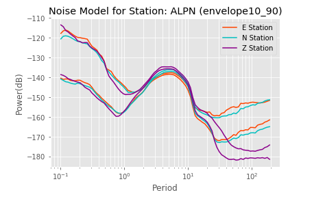

pycheron.psd.noise.stationNoiseModel¶
author: J. Bobeck date: 3.08.16 version: 1.0 modified: N/A
-
stationNoiseModel(st, type='envelope10_90', plot=False, fname=None, network=None, station=None, location=None, session=None, database=None, logger=None)[source]¶ Calculates Station Noise Model for a station
Parameters: - st (obspy.core.stream.Stream or pycheron.db.sqllite_db.Database) – Stream object of data from one station or a Database object
- type (str) –
Type of model:
- ”single10” : Based on single line of 10th percentile
- ”single90” : Based on single line of 90th percentile
- ”single05” : Based on single line of 5th percentile
- ”single95” : Based on single line of 95th percentile
- ”envelope10_90” : Based on envelope between 10th and 90th percentile
- ”envelope05_95” : Based on envelope between 5th and 95th percentile
- plot (bool) – Whether to output plot
- fname (str) – If plot = True, the file location to save it
- network (str) – If using a db object, the network of the data you want to use
- station (str) – If using a db object, the station of the data you want to use
- location (str) – If using a db object, the location of the data you want to use
- session (str) – If using a db object, the session name of the data you want to use
- database (pycheron.db.sqllite_db.Database) – database object to save to
- logger (pycheron.util.logger.Logger) – Logger object
Returns: A dictionary with the following keys and types:
- metric_name (str)
- network (str)
- station (str)
- location (str)
- type (str)
- If type is: “single10”, “single90”, “single05”, or “single95”:
- ”e_station_noiseModel” (pandas.Series) - station noise model based on percentile for channel **E
- ”n_station_noiseModel” (pandas.Series) - station noise model based on percentile for channel **N
- ”z_station_noiseModel” (pandas.Series) - station noise model based on percentile for channel **Z
- If type is: “envelope10_90” or “envelope05_95”:
- ”e_station_noiseModel_low” (pandas.Series) - station noise model based on higher bound percentile (90 or 95) for channel **E
- ”e_station_noiseModel_high” (pandas.Series) -station noise model based on lower bound percentile (05 or 10) for channel **E
- ”n_station_noiseModel_low” (pandas.Series) - station noise model based on higher bound percentile (90 or 95) for channel **N
- ”n_station_noiseModel_high” (pandas.Series) -station noise model based on lower bound percentile (05 or 10) for channel **N
- ”z_station_noiseModel_low” (pandas.Series) - station noise model based on higher bound percentile (90 or 95) for channel **Z
- ”z_station_noiseModel_high” (pandas.Series) -station noise model based on lower bound percentile (05 or 10) for channel **Z
Return type: dict
Example
from pycheron.psd.noise.stationNoiseModel import stationNoiseModel from obspy import UTCDateTime from obspy.clients.fdsn import Client client = Client("IRIS") t = UTCDateTime("2017-06-01T00:00:00") te = UTCDateTime("2017-06-02T00:00:00") st = client.get_waveforms("TX", "ALPN", "00", "*", t, te) model = stationNoiseModel(st, type="envelope10_90",plot=True) # access z station noise above 90 percent model['z_station_noise_high'] # access z station noise below 10 percent model['z_station_noise_low'] # access e station noise above 90 percent model['e_station_noise_high'] # access e station noise below 10 percent model['e_station_noise_low'] # access n station noise above 90 percent model['n_station_noise_high'] # access n station noise below 10 percent model['n_station_noise_low']
Plotting
If you set the parameter plot equal to True then the following plot will be produced.
# using output `model` from above example import matplotlib.pyplot as plt # Station Noise Plots plt.semilogx(model["e_station_noise_low"], 'orangered', label="E Station") plt.semilogx(model["e_station_noise_high"], 'orangered') plt.semilogx(model["n_station_noise_low"], 'c', label="N Station") plt.semilogx(model["n_station_noise_high"], 'c') plt.semilogx(model["z_station_noise_low"], 'darkmagenta', label="Z Station") plt.semilogx(model["z_station_noise_high"], 'darkmagenta') plt.xlabel("Period") plt.ylabel("Power(dB)") plt.title("Noise Model for Station: " + st[0].stats.station + " (" + "envelope10_90" + ")") plt.grid(True, "both", "both", c="white") plt.legend()